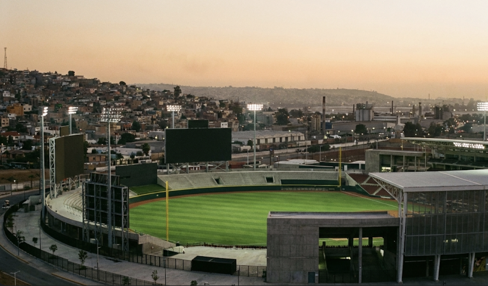
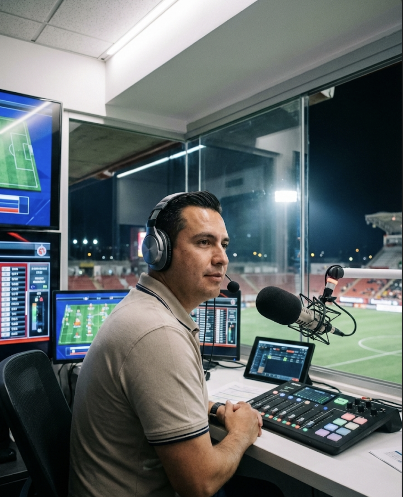
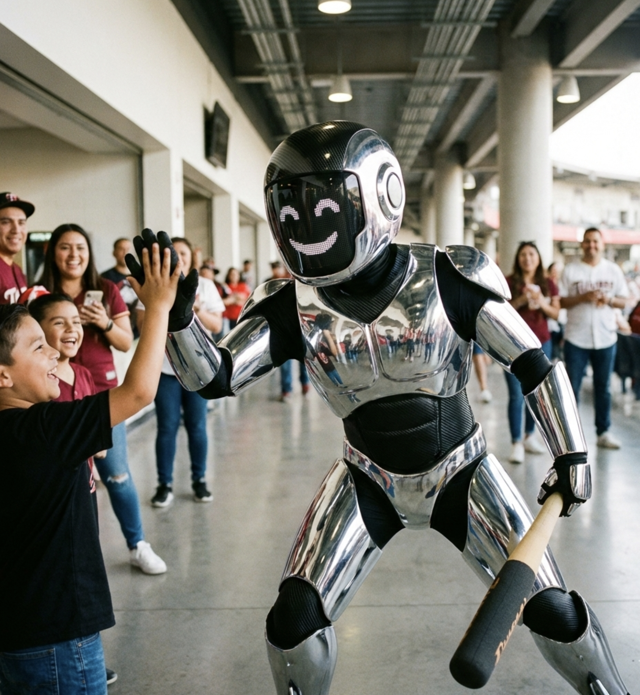
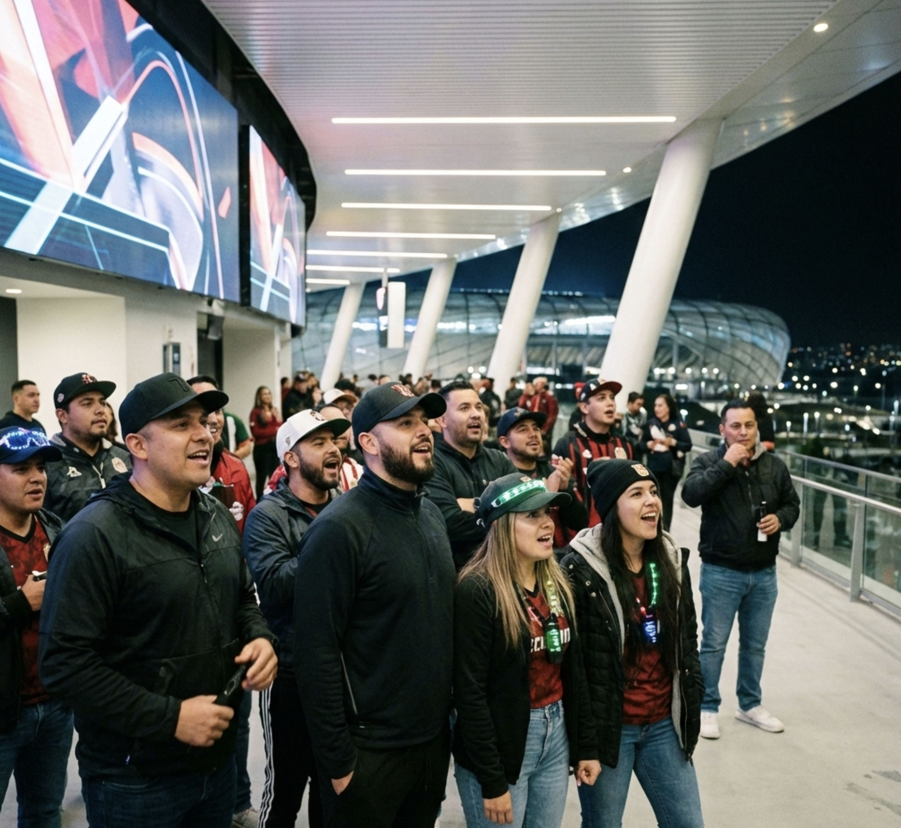

Broadcasts emphasize probability, efficiency, and system performance. Emotion is considered interference.

The mascot represents function, not personality. It exists to remind the crowd that the system is always watching.

Applause is synchronized. Silence is respected. The crowd behaves like a calibrated instrument.